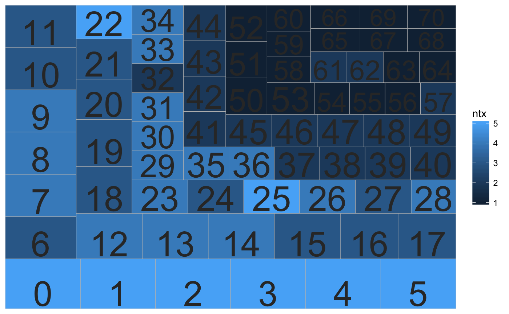
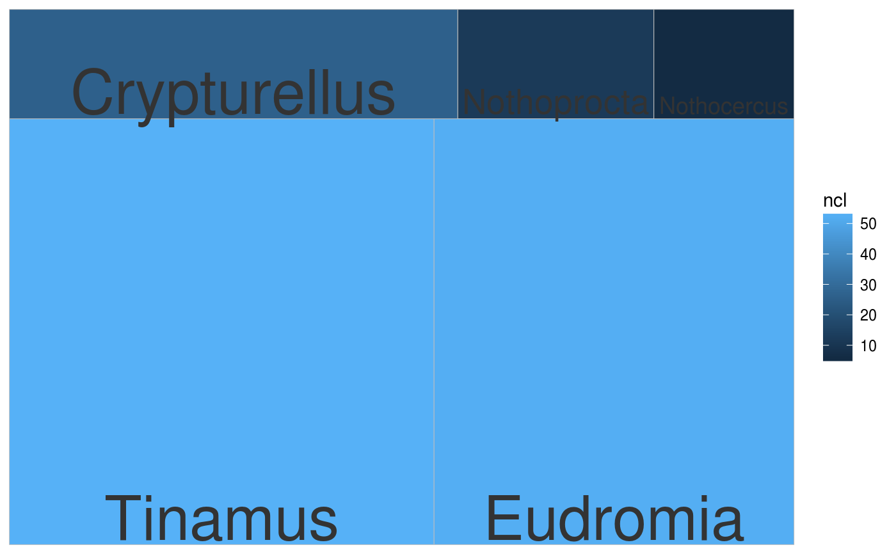

Treemaps show relative size with boxes. The user can explore which taxa or clusters are most represented either by sequence or cluster number. If cluster IDs are provided, the plot is made for clusters. If taxonomic IDs are provided, the plot is made for taxa.
plot_phylota_treemap(phylota, cids = NULL, txids = NULL, cnms = cids, txnms = txids, with_labels = TRUE, area = c("ntx", "nsq", "ncl"), fill = c("NULL", "typ", "ntx", "nsq", "ncl"))
| phylota | Phylota object |
|---|---|
| cids | Cluster IDs |
| txids | Taxonomic IDs |
| cnms | Cluster names |
| txnms | Taxonomic names |
| with_labels | Show names per box? |
| area | What determines the size per box? |
| fill | What determines the coloured fill per box? |
geom_object
The function can take a long time to run for large Phylota objects over many taxonomic IDs because searches are made across lineages. The idea of the function is to assess the data dominance of specific clusters and taxa.
Other tools-public: calc_mad,
calc_wrdfrq, drop_by_rank,
drop_clstrs, drop_sqs,
get_clstr_slot, get_nsqs,
get_ntaxa, get_sq_slot,
get_tx_slot, get_txids,
is_txid_in_clstr,
is_txid_in_sq,
list_clstrrec_slots,
list_ncbi_ranks,
list_seqrec_slots,
list_taxrec_slots,
plot_phylota_pa,
read_phylota, write_sqs
data("tinamous") # Plot clusters, size by n. sq, fill by n. tx p <- plot_phylota_treemap(phylota = tinamous, cids = tinamous@cids, area = 'nsq', fill = 'ntx') print(p)# Plot taxa, size by n. sq, fill by ncl txids <- get_txids(tinamous, txids = tinamous@txids, rnk = 'genus') txids <- txids[txids != ''] txids <- unique(txids) txnms <- get_tx_slot(tinamous, txids, slt_nm = 'scnm') p <- plot_phylota_treemap(phylota = tinamous, txids = txids, txnms = txnms, area = 'nsq', fill = 'ncl') print(p)